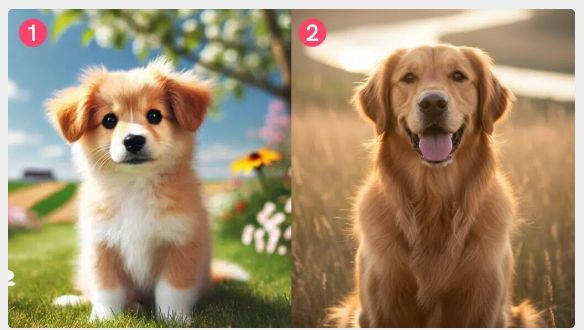

Här ser ni två hundbilder. Den vänstra är skapad av AI för ett år sedan, och den högra skapad nu i höst. Ser ni skillnaden? Det blir lätt att fejka bilder!

Här ser ni två unga tjejer. Vilken av dem tror ni är skapad av AI och vilken finns på riktigt?

Klicka på bilden för att gå vidare till Aftonbladet-quizet!

🉠Grattis, du har klarat allt! ğŸ‰
Du har lärt dig massor om hur man ser vad som är riktigt
och vad som kan vara bluff eller AI-genererat! 💡
- 👀 Var alltid nyfiken och tänk kritiskt när du ser bilder och filmer.
- 🔠Kontrollera alltid källan innan du litar på något.
- 🚫 Klicka aldrig på länkar från okända eller konstiga meddelanden.
- 🤠Lita på personer och konton du känner igen.
- ✨ Ha kul med teknik, men tänk efter innan du delar eller tror på allt du ser!
Nu kan du göra bättre och smarta val online! 🌟💪